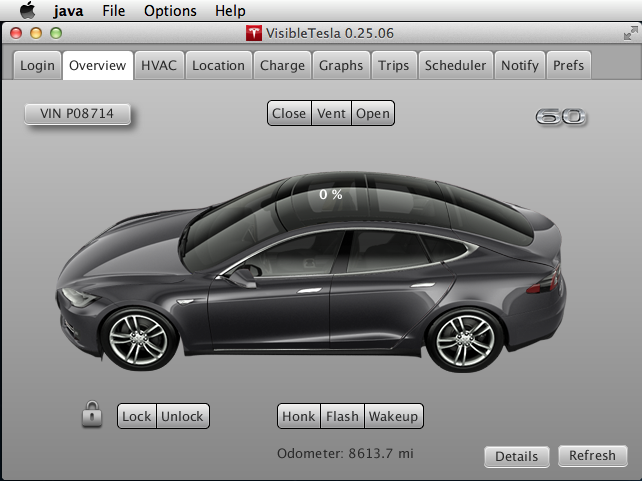
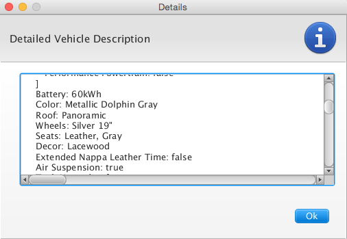
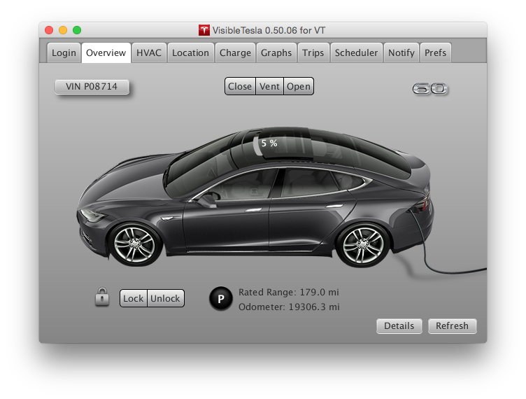
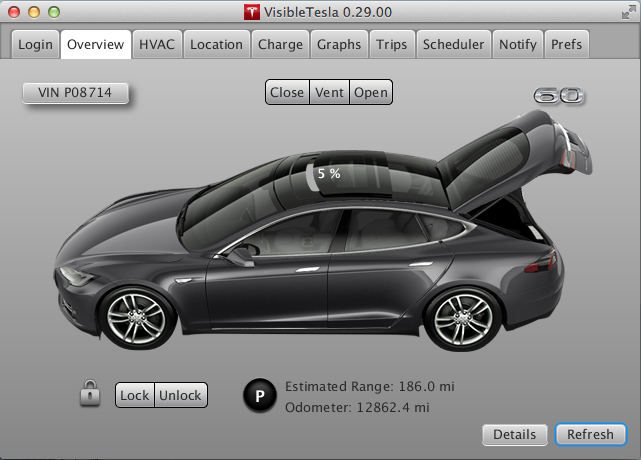

The Overview Tab
The Overview tab shows basic state about the vehicle and gives access to commands like locking and unlocking, operating the panoramic roof (if you have one), flashing the lights, etc. VisibleTesla gathers information about your car so that it can display a relatively accurate representation of it in this tab. This includes the exterior color, the type of wheels, and the type of roof. It also reflects the interior color of the car (tan, black or gray only). You may not notice this when the doors are closed, but if one of the driver side doors is open or the panoramic roof is open, you'll see the seat color. These screen shots show the overview tab reflecting various states of the car. In the upper right hand area of the tab you'll see an emblem that indicates the type of car you have.

The next screen shot shows an information dialog that provides detailed information about your car. That dialog is displayed in response to pressing the Details button. If you scroll all the way to the bottom you will see a very long line of low level details. Unless you are technically curious or have been requested to provide debugging information, you can ignore this.

The next screen shot shows the panoramic roof in the vented state. The user may vent, open, or close the panoramic roof using the buttons right above the roof. At the upper left of the Overview Tab is a button that displays the last six characters of the car's VIN (Vehicle Identification Number). This is for informational purposes only. If you press the button, it will change what is displayed from the VIN to the firmware version. You can toggle this information back and forth at will. When you quit VisibleTesla it will remember what you were displaying and display that again when the app is launched again. The full VIN and firmware version are also available in the Details dialog described above, but this makes them more readily available.

The final screen shot shows what the app will display when the driver's door and the rear trunk are open. The app displays the open/closed state of all four doors, the trunk, the frunk, and the chargeport. When the car is plugged-in, it will also show a charge cable connected to the charge port.
